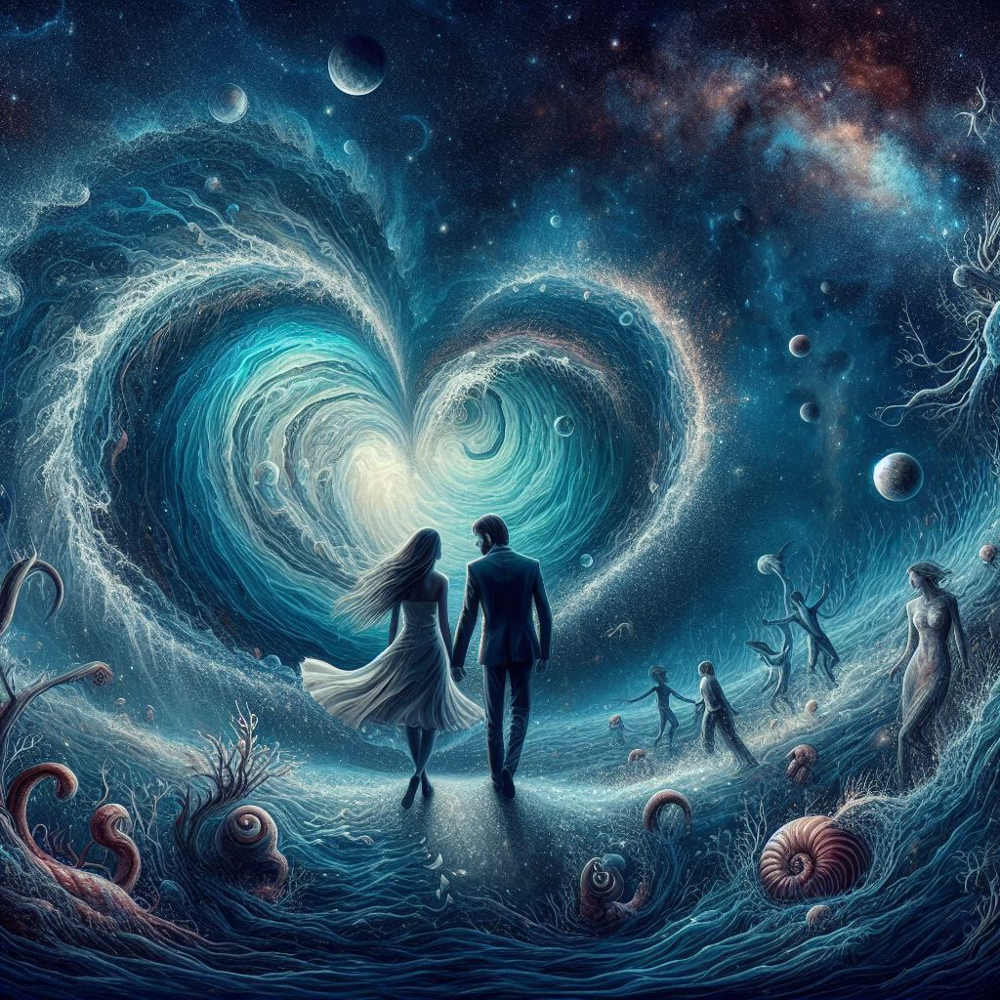

작가
정대건
출판일
2022년12월22일
감상평에 대한 AI그림
이 책은 전반적으로 역동적이고 주인공들의 감정이 잘 표현되어있다.
'사랑이 무엇인가?'에 대해 생각해보는 시간을 가질 수 있다.
문장의 길이가 짧고 등장인물이 적어 가독성이 좋아 빠르게 읽을 수 있다.
하지만, 책의 내용이 예측가능하여 책을 읽으면서 흥미를 느끼기 어려웠다.

감상평에 대한 AI평가
이 책은 다음의 특징으로 구성되어 있는 것 같아요.
✨ 역동적이고 감정 표현이 뛰어남: 주인공들의 감정이 잘 표현되어 있어서 독자가 몰입할 수 있는 요소가 많다.
✨ 가독성이 높음: 문장이 읽기 쉽고 빠르게 진행되어 독서의 흐름이 끊기지 않음.
✨ 예상 가능한 전개: 이야기의 전개가 예상과 크게 다르지 않아서 새로운 흥미를 끌기 어려웠음.